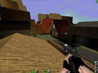

Map name: Civil War
Map author: Hammer, Darkman, Malboro Man, Deathbringer
Map filename: civilwar.zip
Reviewed by: Bulldog
Review
Looks Rating: 6 /10
Architecture Comments:
The layout appears to be two cities in a civil war (hence the name). It was obvious as soon as saw the gun aimed at one city by the other (it works too!) Each city (or village) has a church, wooden house and tall buildings. The lower village has a steel mill(?) and the upper village has a gas station. There are four ways to get to a village from the other, but two of them are one-way. This a small map which has many lookout spots from which you can see pretty much the whole map, which causes some problems...
Looks Rating: 4 /10
Looks Comments:
From the readme the map uses about 3 or 4 new textures, and it shows.Mostly all the new prefabs aren't textured, just shaded. This includes lamps, toilets, shelves, a lot of things. All the buldings, except for the wooden ones have steel walls, even the chuches do. It looks awful, and doesn't fit in with the American Civil War theme that (as far as I can tell) is what this map is set in. There worst part is the sky, which is a whole buch of mountains with a few buildings on the side, which is clearly impossible from where you can see. The sky is also ( or appears to be) in the Quake 2 engine, and the snow capped mountains mixed in are an abbrupt start from grassy mountainside.
Gameplay Rating: 4 /10
Gameplay Comments:
The sniper rifle and M4 and ammo for both are extremly easy to get, making this a sniper's (and sniper hunter's) heaven, beacause from the hilltop you can see all of the small map, and all sniping areas are easy to get to, though hard to find. DM becomes a fight for survival as poeple rush to the weapons, then snipers try to pick off the chargers while the charges try to get up to the sniper quickly enough to shoot them full or M4 ammo. It's always one or the other winning, which is why it sucks. TP is the same, with sniper wars abound and MP5/10 campers picking off anyone dumb enough to run from cover. What it comes down to is the team to the hilltop first wins. Even though the map was made for TP :(
Ambiance Rating: 3 /10
Ambiance Comments:
This is the maps weakest and strongest point, which makes a score hard to choose, but I consistantly got the "Cool! I'm really in a, wait, no, I'm not" feeling. The wooden house and ringing bell in the upper village/town's church are great until you see the gas station's blinking lights. The lower village is almost completely right until you go into the steel mill, or whatnot, and discover lots of boxes with the Strogg symbol on them. With 4 (yes, 4!) people working on the map, I would expect more and better textures on some boxes. The tall buildings had TV's in them! What really does it though, is the fact the map ends. No wall, no rock, it just ends at the edges. The sky, when looking down, is a long long LONG drop to the bottom of a canyon. But of course, you can't fall down there! Unacceptable.
Other Comments:
Like the map saddam, a lot of cool traps like the TNT in the passage, the big gun, and the gas station that can explode are fun and orignal and get played with a lot. Until, of course, you realise no one is going to get caught in them. One nice but flawed innovation was the hedge wall you can walk through, which makes sense, but you can crouch in it and see the hollowed out inside.
Conclusion:
When I saw the name and how 4 people were working on it, I was expecting a Civil War warzone with medic tent and backround guinfire and all sorts of cool stuff like the map beachassault, which is the only map that comes to mind whth more than 1 author. But instead I got a ugly psuedo-civil war map with bad DM and TP play. Which is a shame.
Overall Rating: 4
Reviewed By: Bulldog